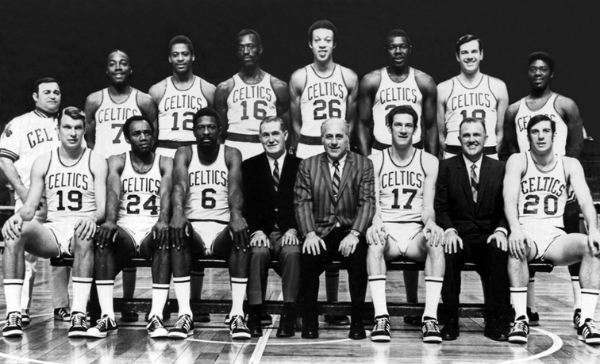
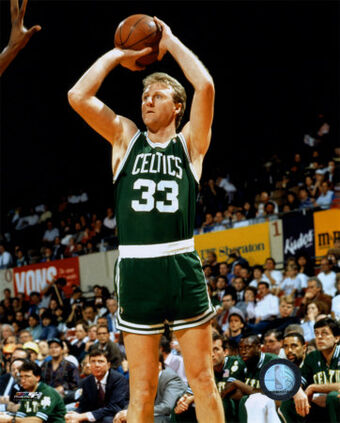
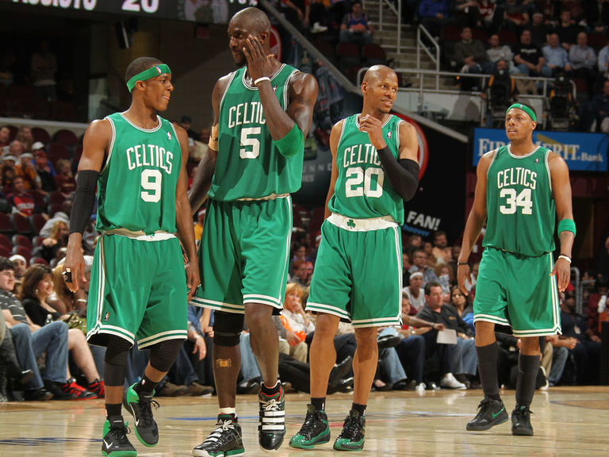

Drużyna na przestrzeni lat...
1946–1950: Pierwsze lata
Boston Celtics zostali utworzeni w 1946, przez prezydenta Boston Garden-Arena Corporation Waltera A. Browna i dołączyli do Basketball Association of America, stając się też po połączeniu BAA i National Basketball League członkiem nowej ligi, National Basketball Association[7]. W 1950 roku Celtics stali się pierwszym zespołem, który wybrał w drafcie afroamerykańskiego gracza, którym stał się Chuck Cooper .W 1951 roku, Brown stał się właścicielem Boston Bruins z National Hockey League, kiedy to ich poprzedni zarządca Charles Adams borykał się z problemami finansowymi. Brown posiadał już wówczas dwie zawodowe drużyny, które rozgrywały swoje mecze w Boston Garden.
1950–1969: Lata Auerbacha i Russella
Prawie od początku istnienia drużyną kierował trener Arnold „Red” Auerbach. Za jego kadencji Celtics zdobyli dziewięć tytułów mistrzowskich NBA, z czego osiem zostało wywalczonych rok po roku. Pierwszy znaczącym posunięciem transferowym Auerbacha było pozyskanie w 1951 znakomitego rozgrywającego Boba Cousy. Kilka lat później oddał do St. Louis Hawks dwóch doświadczonych zawodników, Eda Macauleya i Cliffa Hagana, w zamian za prawo pierwszego wyboru w drafcie przed sezonem 1956–1957, zyskując w ten sposób 208-centymetrowego Billa Russella, grającego na pozycji środkowego. Auerbach zaangażował również K.C. Jonesa i Tommy’ego Heinsohna. Po roku korzystając z przysługującego Celtics wyboru w pierwszej rundzie draftu, dodał do ekipy obrońcę, Sama Jonesa. Z tymi zawodnikami Auerbach zdominował ligę w latach 60. Po zakończeniu sezonu 1965-1966 Auerbach przekazał swoje obowiązki Russellowi, który stał się pierwszym w NBA czarnym głównym trenerem. Pod wodzą Russella, pełniącego przez trzy sezony podwójną rolę trenera i zawodnika, Boston Celtics wywalczyli mistrzostwo ligi jeszcze dwa razy.
1970–1978: Duet Heinsohn-Cowens
Dorobek ten powiększył się o dwa tytuły w latach 70., gdy trenerem był Heinson, a czołowymi zawodnikami John Havlicek i Dave Cowens. Jednak bostończycy już w sezonie 1977-1978 uzyskali poniżej 50% zwycięstw.
1979–1993: Era Larry’ego Birda
Auerbach, mając prawo pierwszego wyboru w drafcie zdecydował się na Larry’ego Birda. Następne posunięcie Auerbacha polegało na dość skomplikowanym „handlu wymiennym” z Golden State Warriors. „Red” oddał im dwa prawa wyboru w drafcie za środkowego Roberta Parisha oraz wybór nr 3, który został wykorzystany później na Kevina McHale’a. Auerbachowi udało się też pozyskać obrońców, Dennisa Johnsona i Danny’ego Ainge'a. W tym składzie Celtics, pod wodzą Larry’ego Birda, pięciokrotnie walczyli wówczas w finałach NBA, trzy razy zdobywając mistrzostwo ligi.W 1986, dwa dni po drafcie, umarł utalentowany Len Bias na skutek przedawkowania narkotyków, w 1992 kontuzja wyeliminowała z gry Larry’ego Birda, a w lecie 1993 zmarł nowy lider drużyny, Reggie Lewis. Te wydarzenia zapoczątkowały wielki kryzys w zespole.
1993–2007: Przebudowa zespołu
W 1997 Auerbach ściągnął do Bostonu trenera Ricka Pitino, który wcześniej pomógł wrócić do świetności New York Knicks, a następnie doprowadził drużynę uniwersytetu Kentucky do mistrzostwa uczelnianej ligi NCAA. Pitino dokonał gruntownej przebudowy Boston Celtics angażując młodych graczy. Trzon zespołu tworzyli: dwaj utalentowani debiutanci – rozgrywający Chauncey Billups (obecnie zawodnik Detroit Pistons) i wszechstronny Ron Mercer, grający wcześniej w drużynie uniwersytetu Kentucky, a także młodzi skrzydłowi Antoine Walker i Eric Williams oraz środkowy Travis Knight. Niestety, duże rotacje kadrowe nie przyniosły efektów. Po rezygnacji Pitino w 2001, zespół prowadzili kolejno: Jim O’Brien, Danny Ainge i w końcu Doc Rivers, a zespół przechodził bezustanną przebudowę. Wskutek tego, największym sukcesem w ciągu ostatnich 15 lat był zaledwie finał konferencji w 2002. W 2006 Celtowie pozyskali nowego gracza wybrany z numerem 21 w drafcie. Był to Rajon Rondo który został wysłany do Phoenix Suns jednak natychmiast został odesłany do Bostonu. W swoim drugim sezonie stał się graczem pierwszej piątki, a zespół z wielkimi gwiazdami: Paulem Pierce’em, Kevinem Garnettem i Rayem Allenem, w składzie sięgnął po mistrzowskie pierścienie. Obecnie uznawany za jednego z najlepszych rozgrywających NBA.
2007–2013: Wielcy Celtowie
2007 rok przyniósł największe pozytywne zmiany w składzie od lat. Do zespołu zaangażowano dwie wielkie gwiazdy: Kevina Garnetta i Raya Allena. Wraz z Paulem Pierce’em i Rajonem Rondo stanowili oni trzon Celtów, których od początku stawiało się w gronie faworytów ligi w sezonie 2007-2008. Sezon zasadniczy Celtics zakończyli na pierwszym miejscu w lidze, odnosząc najwięcej zwycięstw (bilans 66-16). W fazie play-off bostończycy, mający zapewnioną przewagę własnego boiska, rozegrali aż 20 meczów (Lakers – 15), zwyciężając kolejno Atlanta Hawks 4-3, Cleveland Cavaliers 4-3 i Detroit Pistons 4-2 , i po raz pierwszy od 1987 wystąpili w finałach ligi, spotykając się z odwiecznymi rywalami – Los Angeles Lakers. Zakończyli je zwyciężając w serii 4-2, a w ostatnim, szóstym meczu w swojej własnej hali deklasując przeciwników 39 punktami (131-92). MVP finałów został ogłoszony Paul Pierce. W sezonie 2009-10 Celtics ponownie – pomimo dopiero czwartego miejsca w Konferencji Wschodniej po sezonie zasadniczym – dotarli do finałów NBA, w których zmierzyli się z Lakers. W siedmiomeczowej serii Celtics ostatecznie przegrali 3:4. W sezonie 2010-11 do klubu dołączył Shaquille O’Neal. Zespół z Bostonu zakończył jednak sezon na półfinale konferencji, przegrywając 1-4 z Miami Heat. Rok później gracze Celtics postraszyli Heat w finale konferencji. Jednakże pomimo prowadzenia w serii 3-2, Boston przegrał 3-4 ,a po sezonie, do zwycięzców tej serii dołączył rzucający obrońca Celtics Ray Allen. W sezonie 2012-13 Boston odpadł już w pierwszej rundzie playoffs, przegrywając z New York Knicks 2-4. Pracę w klubie stracił Doc Rivers, a do Brooklyn Nets w wyniku transferu odeszli Kevin Garnett, Paul Pierce i Jason Terry. Stanowisko Riversa objął Brad Stevens, trener uniwersyteckiej drużyny Butler Bulldogs. Przez sezony 2013-14, 2014-15 i 2015-16 w klubie dokonywano zmian w składzie. Celtics raz nie dostali się do playoffs, a dwa razy zakończyli sezon na 1. rundzie. W sezonie 2016-17 prowadzeni przez Isaiaha Thomas gracze z Bostonu uzyskali najlepszy wynik w konferencji wschodniej, notując 53 zwycięstwa. W playoffs pokonali Chicago Bulls 4-2 oraz Washington Wizards 4-3 i dotarli do finału konferencji, po raz pierwszy od 2012 roku. Ulegli w nim 1-4 Cleveland Cavaliers. W drafcie 2017 roku, Boston Celtics wybrali z trzecim numerem Jaysona Tatuma.